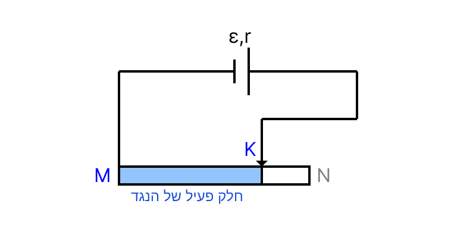

[תמונת השאלה המקורית]לא נמצאה תמונה בשם question-image.png באותה תיקייה.
ניתוח המעגל והבנת הבעיה
לפני שניגש לסעיפים, ננתח את המעגל החשמלי הנתון:
יש לנו מקור מתח בעל כא"מ \( \varepsilon \) והתנגדות פנימית \( r \).
המעגל נסגר דרך חלק מהנגד המשתנה (ראוסטט), בין הנקודה M לנקודה K. הקטע K עד N "תלוי באוויר" ולא עובר דרכו זרם, ולכן אינו חלק ממעגל הזרם.
המתח \( V \) הנמדד בין M ל-K הוא למעשה מתח ההדקים של המקור, משום שנקודות אלו מחוברות ישירות להדקי המקור (בהנחת תילים אידיאליים).

התמונה image-0.png לא נמצאה.
סעיף א' - מציאת הזרם המינימלי
מה נתון: הטבלה מספקת זוגות של מדידות זרם \( I \) ומתח \( V \). המגע הנייד נמצא בקצה N של הנגד המשתנה. כל הנתונים נמצאים ביחידות MKS (אמפר, וולט) ולכן אין צורך בהמרת יחידות.
מה מחפשים: את עוצמת הזרם במעגל \( I \) במצב זה, מתוך הנתונים המופיעים בטבלה, בליווי נימוק.
התנגדותו של תיל עומדת ביחס ישר לאורכו. עקרון הפעולה של הנגד המשתנה אומר שככל שהזרם עובר מרחק גדול יותר בתוך הנגד, ההתנגדות גדולה יותר.
כאשר המגע הנייד K נמצא בנקודה N, אורך הנגד המשתף פעולה במעגל (המרחק בין M ל-N) הוא המקסימלי האפשרי. מכיוון שההתנגדות \( R \) נמצאת במכנה של חוק אוהם, ככל שההתנגדות גדולה יותר, עוצמת הזרם \( I \) במעגל קטנה יותר.
לכן, המצב בו המגע נמצא ב-N מתאים להתנגדות המקסימלית ולזרם המינימלי. אם נתבונן בטבלה, הזרם המינימלי שנמדד הוא:
מסקנה: עוצמת הזרם היא \( I = 0.5 \text{ A} \).
💡 טיפ מורה:
דמיינו שאתם שותים שייק סמיך דרך קש. כשהקש קצר, קל לשאוב והמשקה זורם מהר. אבל אם תנסו לשתות דרך קש ארוך מאוד (למשל מטר!), יהיה לכם הרבה יותר קשה, וכמות המשקה שתגיע לפה שלכם בכל שנייה תקטן משמעותית.
הנגד המשתנה פועל באותו אופן: ככל שאנו מאלצים את האלקטרונים לעבור מסלול ארוך יותר בתוכו (על ידי הזזת המגע לעבר N), ההתנגדות לתנועה שלהם גדלה, ולכן "כמות האלקטרונים" שעוברת בשנייה (שזה בדיוק הזרם החשמלי) קטנה.
סעיף ב' - שרטוט גרף הפיזור וקו מגמה
מה נתון: טבלת המדידות של הזרם \( I \) והמתח \( V \).
מה מחפשים: 1. לשרטט גרף של מתח \( V \) כפונקציה של הזרם \( I \). 2. להוסיף קו מגמה מתאים לנקודות.
נוסחאות ועקרונות בשימוש:
בשלב זה איננו נדרשים לנוסחאות תיאורטיות. העיקרון המנחה הוא שרטוט מדויק של הנקודות האמפיריות מתוך הטבלה אל מערכת צירים, והעברת קו מגמה (Trend Line) - קו ישר שמייצג בצורה הטובה ביותר את אוסף הנקודות.
הצבה ופתרון (שרטוט גרף):
נשרטט מערכת צירים תקנית. בציר האופקי (\( x \)) נציב את המשתנה הבלתי תלוי - הזרם \( I \), ובציר האנכי (\( y \)) נציב את המשתנה התלוי - המתח \( V \). לאחר הצבת הנקודות, נמתח בעזרת סרגל קו ישר שיעבור קרוב ככל האפשר לכל הנקודות ביחד.
מסקנה: שרטטנו את הנקודות מהטבלה והעברנו קו מגמה ישר בממוצע הנקודות.
💡 טיפ מורה:
שימו לב שהנקודות אינן יושבות במדויק על קו ישר מושלם בגלל שגיאות מדידה האופייניות לכל ניסוי במעבדה. תפקידו של קו המגמה הוא "להחליק" את השגיאות ולמצוא את המגמה הכללית הנסתרת בנתונים. לעולם אל תחברו את הנקודות בקו שבור (כמו בציורי "נקודה לנקודה")!
סעיף ג' - מציאת הכא"מ מהגרף
מה נתון: הגרף ששורטט בסעיף ב', המהווה ייצוג חזותי למשוואת מתח ההדקים.
מה מחפשים: את ערך הכא"מ \( \varepsilon \) של מקור המתח, ולסמן את הנקודה הרלוונטית על הגרף בבירור.
נוסחאות ועקרונות בשימוש: \( V = -r \cdot I + \varepsilon \)\( y = m \cdot x + b \)
חישוב ופתרון:
כעת נחבר את תוצאות הניסוי לתיאוריה הפיזיקלית. נשווה את משוואת מתח ההדקים למשוואת קו ישר כללית במתמטיקה. מכאן ניתן להסיק שנקודת החיתוך של קו המגמה עם ציר ה-y (כאשר \( I = 0 \)), המסומנת באות \( b \), שווה לכא"מ \( \varepsilon \).
נביט בגרף שהכנו ונמשיך (נאקסטרפולציה) את קו המגמה אל עבר ציר המתח (הציר האנכי). אנו רואים שקו המגמה חותך את ציר ה-y בדיוק בנקודה שבה \( V = 6 \text{ V} \). נסמן נקודה זו על הגרף:
מסקנה: הכא"מ הוא \( \varepsilon = 6 \text{ V} \).
💡 טיפ מורה:
המשמעות הפיזיקלית של חיתוך ציר ה-Y היא מצב של "מעגל פתוח" בו הזרם שווה לאפס (\( I=0 \)). במצב כזה, אין "בזבוז" מתח על ההתנגדות הפנימית, ומתח ההדקים שווה בדיוק לכא"מ המקסימלי שהסוללה יכולה לתת.
סעיף ד' - מציאת ההתנגדות הפנימית
מה נתון: קו המגמה ששורטט בגרף. אנו בוחרים שתי נקודות הנמצאות בדיוק על קו המגמה (ולא בהכרח נקודות מהטבלה). נבחר את נקודת החיתוך שמצאנו: \( (0, 6.0) \) ונקודה נוספת שנוחה לקריאה למשל \( (2.0, 2.0) \).
מה מחפשים: את ההתנגדות הפנימית \( r \) של מקור המתח.
מהשוואת הנוסחאות בסעיף הקודם (\( V = -r \cdot I + \varepsilon \) מול \( y = m \cdot x + b \)), אנו מבינים ששיפוע הגרף \( m \) שווה ל- \( -r \). נחשב את השיפוע:
מכיוון ש- \( m = -r \), הרי ש: \( -r = -2.0 \Rightarrow r = 2.0 \ \Omega \).
מסקנה: ההתנגדות הפנימית היא \( r = 2 \ \Omega \).
💡 טיפ מורה:
טעות נפוצה היא לקחת שתי נקודות מהטבלה ולחשב שיפוע ביניהן. זה שגוי! נקודות הטבלה מכילות שגיאות. חובה תמיד לחשב שיפוע מתוך שתי נקודות שנמצאות על קו המגמה המשורטט.
סעיף ה' - עוצמת הזרם כשהמגע ב-M
מה נתון: המגע הנייד נמצא כעת בנקודה M. הכא"מ \( \varepsilon = 6 \text{ V} \) וההתנגדות הפנימית \( r = 2 \ \Omega \).
מה מחפשים: את עוצמת הזרם \( I \) במצב זה.
נוסחאות ועקרונות בשימוש: \( I = \frac{\varepsilon}{R + r} \)
חישוב:
כאשר המגע הנייד יושב בדיוק על M, אורך הקטע הפעיל בראוסטט הוא אפס. המשמעות היא שההתנגדות החיצונית מתאפסת (\( R = 0 \)). נציב את הנתונים הידועים בחוק אוהם למעגל שלם:
\[ I = \frac{6}{0 + 2} = 3 \text{ A} \]
מסקנה: עוצמת הזרם היא \( I = 3 \text{ A} \).
💡 טיפ מורה:
המצב שבו \( R=0 \) נקרא קצר חשמלי. הזרם שקיבלנו הוא "זרם הקצר" והוא הזרם המקסימלי שהסוללה מסוגלת לספק במעגל זה. ניתן לראות זאת גם בגרף כנקודת חיתוך עם ציר ה-I בה המתח מתאפס!
סעיף ו' - האם יש סתירה לחוק אוהם?
מה נתון: מתוצאות המדידה עולה שכאשר המתח קטן, הזרם גדל.
מה מחפשים: קביעה ונימוק האם תוצאות אלו עומדות בסתירה לחוק אוהם.
נוסחאות ועקרונות בשימוש: \( V = I \cdot R \)\( V_{ab} = \varepsilon - I \cdot r \)
הסבר ופתרון:
אין סתירה לחוק אוהם. הגדרת חוק אוהם מתארת יחס ישר בין מתח לזרם רק כאשר ההתנגדות \( R \) קבועה.
אולם בניסוי שלפנינו, אנו משנים את ההתנגדות החיצונית (מזיזים את המגע הנייד) וזהו הגורם שגורם לזרם במעגל להשתנות.
כאשר אנו מקטינים את ההתנגדות של הראוסטט, התנגדות המעגל הכוללת קטנה, ולכן עוצמת הזרם \( I \) גדלה. במקביל, ככל שהזרם במעגל גדל, מפל המתח הפנימי בתוך הסוללה (\( I \cdot r \)) גדל. כתוצאה מכך, נשאר פחות מתח עבור ההדקים (\( V_{ab} = \varepsilon - I \cdot r \)).
מסקנה: התוצאות אינן עומדות בסתירה. הגרף מייצג את מתח ההדקים של מקור המתח כתלות בזרם, ולא נגד בעל התנגדות קבועה.
💡 טיפ מורה:
מלכודת קלאסית! תמיד תשאלו את עצמכם: "מה המכשיר מודד?". מד המתח בשאלה זו מחובר על המקור ומודד את מתח ההדקים, ולא מתח על נגד ספציפי קבוע. המשתנה הבלתי תלוי בניסוי הוא למעשה ההתנגדות המשתנה, ולא המתח.
נוסח השאלה המקורית
[תמונת השאלה המקורית]לא נמצאה תמונה בשם question-image.png.